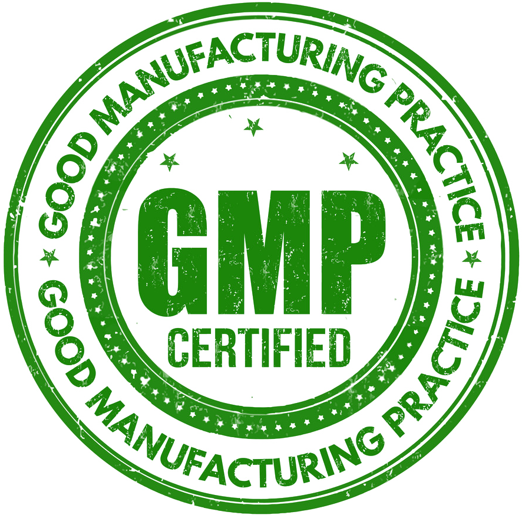
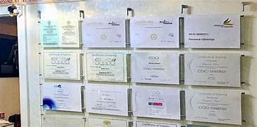

C
Curova Pharma
Quality & Compliance
Every batch that leaves our facility represents our promise of safety and reliability. We strictly follow WHO-GMP and ISO 9001:2015 guidelines.
Certifications



Testing & Traceability
From raw material verification to finished product stability testing, every step is documented and traceable. This ensures that our medicines meet both national and international quality requirements.